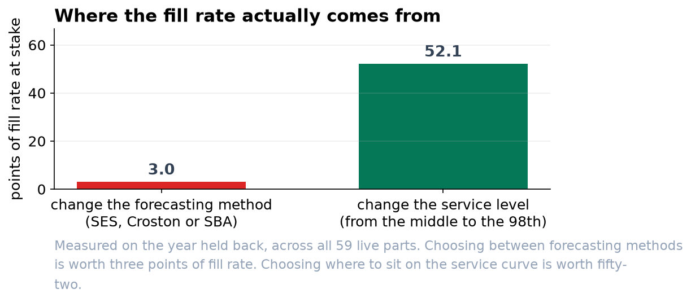

We Are Measuring the Forecast on Two Fifths of the Data.
The monthly accuracy figure cannot be computed on a week when nobody ordered anything, and for this catalogue that is three weeks in five. Separately, the stock level nobody discusses is worth seventeen times more than the forecasting method everybody does.
Recommendation
Stop reporting the monthly percentage error, set the stock levels from a service quantile, and tune that quantile until the simulation delivers the 95 percent we promised. Which forecasting method we use is worth about three points of fill rate. Where we set the service level is worth fifty-two.
The accuracy number in the monthly pack is not what it appears to be
A percentage error divides by what was actually demanded. In three weeks out of five, for a typical part, nobody ordered anything, so there is nothing to divide by and the row is undefined.
The tool does not warn about this. It drops the undefined weeks and averages what is left. Across the year we tested, the figure was computed on 39 percent of the data, and there is not one part in the catalogue where it could be computed for a whole year. The weeks it uses are the weeks that had demand, which are the easy ones to be roughly right about.
A scaled error, which compares the forecast against simply repeating last week. It is defined when demand is zero, and it can be averaged across a slow-moving seal and a fast-moving filter without one drowning the other.
A part that has stopped is not a part that is slow
One part in the pilot, P1024, had not been ordered for 37 weeks. Its normal gap between orders is under three weeks, so that is fourteen times its own rhythm; the next quietest part in the catalogue was at four times. It had been superseded by a newer number.
Every forecasting method we tried produced a small positive number for it. We would have stocked it, and in the year we held back it was issued nothing at all. The test that catches this is a ratio rather than a fixed number of weeks: four quiet weeks mean nothing for a part ordered twice a year and a lot for one ordered fortnightly.
Where the service level actually comes from
We ran every part through the real policy, weekly review and a two-week lead time, for four forecasting methods and five service levels, and scored the year we had held back.

The forecasting methods were separated by three points of fill rate, and most of that gap was one poor method we would not use anyway. Moving the service level moved the fill rate across almost its whole range. Both decisions are ours to make, and we have been spending our attention on the smaller one.
Two things about the 95 percent target
| What we found | |
|---|---|
| Asking for the 95th percentile does not give 95 percent service | It delivered 92.7 percent. The percentile controls how often a replenishment runs short; the fill rate counts units, and a big shortfall counts worse than a small one. The percentile has to be tuned until the simulation hits the target. |
| The last few points cost far more than the first | Getting from 44 to 87 percent costs about six units a part. The next nine points cost twelve more. The final stretch runs at roughly twenty-seven times the cost per point of the first stretch. |
Neither of these is a forecasting question, and neither can be answered by looking at an accuracy report. Both come out of running the year through the policy we actually operate.
What we are not claiming
The forecasting method still matters a little, and we should use the better one. The method built for this kind of demand was best overall and costs nothing extra to run. The point is proportion: it is worth a few points and the service level is worth tens.
This is sixty parts, not the whole catalogue. The pattern should hold, because it comes from the shape of the demand rather than from these particular parts, but the service curve should be rebuilt on the full range before any target is changed.
Three things. Replace the percentage error in the monthly pack with a scaled one. Run the dead-stock test across the whole catalogue, not just the pilot. And bring the service curve, not the forecast accuracy, to the next conversation about what the dealer network is promised.